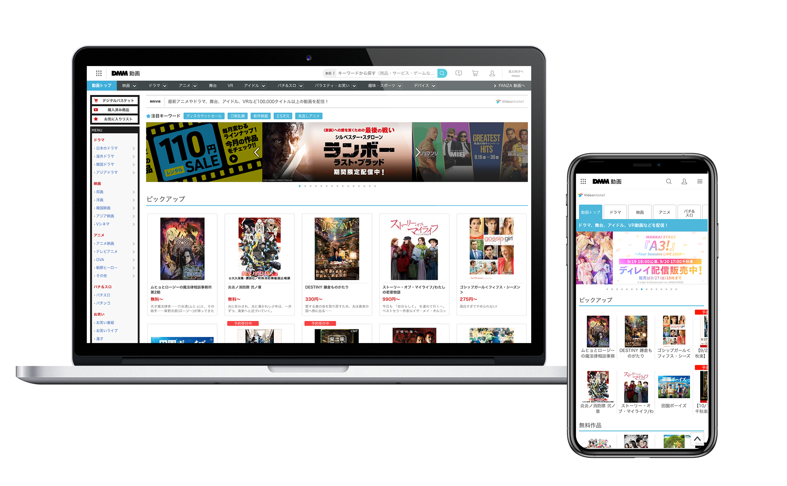

PRODUCT
DMM動画・FANZA動画
Web Service[PC/SP]
豊富なラインナップの動画を様々なデバイスで楽しむことなどができる動画配信サービス。2.5次元や成人向け動画などは国内最大級の規模を誇る。
WEBサイトの成長を担うグロースハックを担当。
フロント部分のUI/UX設計はもちろんのこと、起案や試算などビジネスから一気通貫で施策を取りまとめる。
また、チーム業務だけでなく、チームを超えて大型案件のプロジェクトマネージャーなども勤め、物事を推進させる働きを担う。
豊富なラインナップの動画を様々なデバイスで楽しむことなどができる動画配信サービス。2.5次元や成人向け動画などは国内最大級の規模を誇る。
WEBサイトの成長を担うグロースハックを担当。
フロント部分のUI/UX設計はもちろんのこと、起案や試算などビジネスから一気通貫で施策を取りまとめる。
また、チーム業務だけでなく、チームを超えて大型案件のプロジェクトマネージャーなども勤め、物事を推進させる働きを担う。